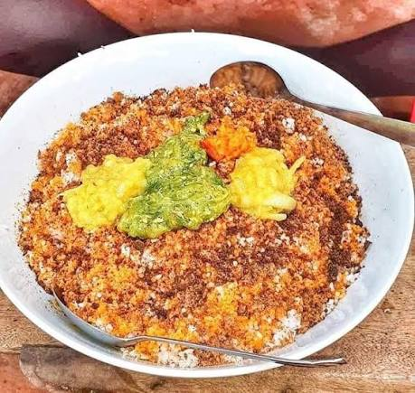
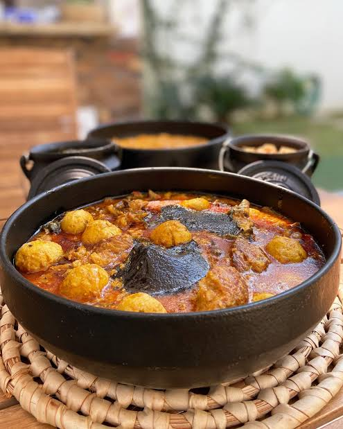
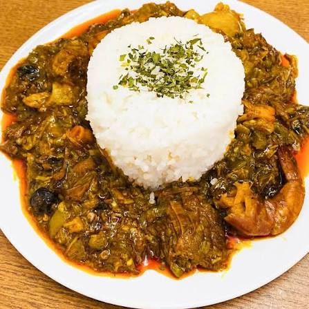

Caldo de mancarra-molho tradicional de amendoim com peixe cervido com arroz branco. Chabéu-arroz com peixe seco, legumes frescos e temperos locais. Frango Cafriela-frango marinado em evas e especiarias, greliado lentamente. Cabrito Estufado-carne macia cozida com temperos naturais tipicos de festa. Caldo de Peixe Seco-molho intenso preparado com óleo de palma e legumes, Arroz de Marisco-preparado com camarão, carangueijo, peixe fresco. Caldo branco-preparado com peixe seco ou fresco, base de alimentação guineense. Sobremasas Doce de couco tradicional-coco ralado com açúcar,muito apreciado em festas. Bolos careiros tradicionais-preperados em celebrações familhares.

Fute

Caldo de Bagre

Siga
Os sabores da Guiné, teremos o maior prazer em receber você.